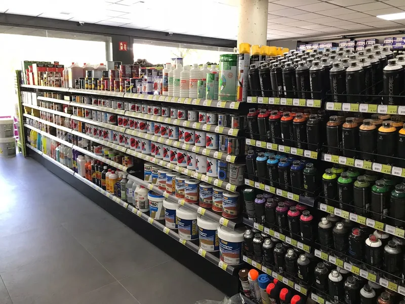
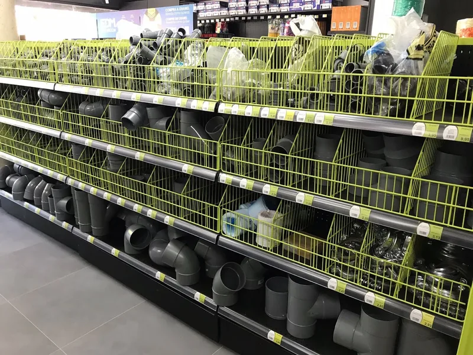
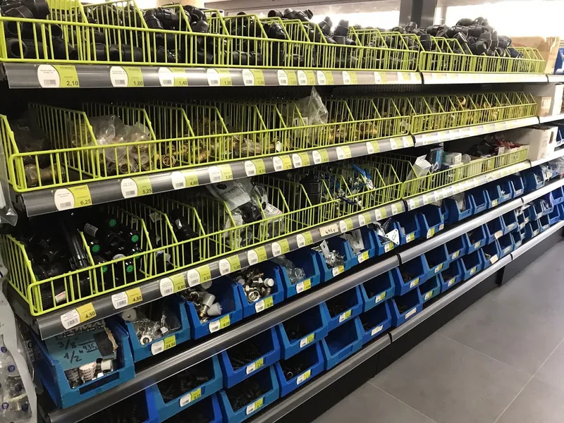
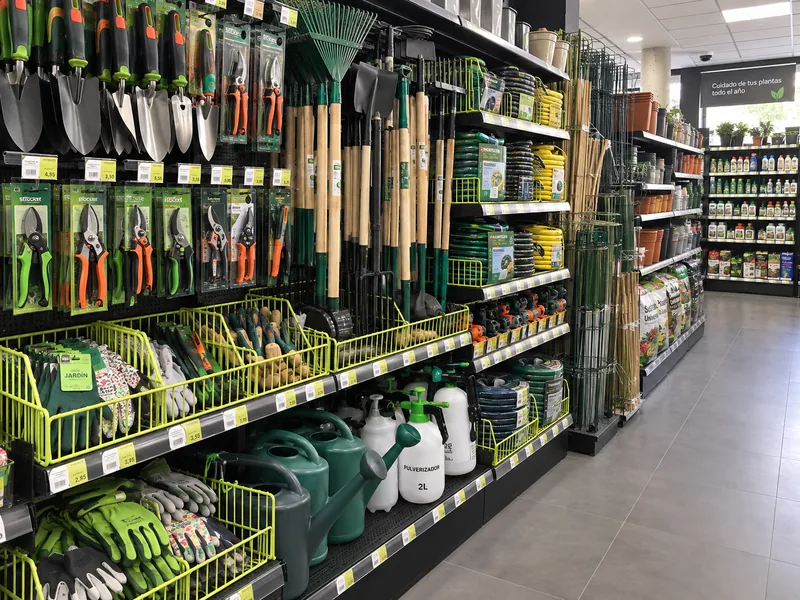

Productos de ferretería en Navarcles: pinturas, herramientas, fontanería y jardín
En Ferreteria Vila Sánchez encontrarás una amplia variedad de productos de ferretería en Navarcles para hogar, bricolaje y obra. Vendemos pinturas y barnices, material de fontanería, tornillería y fijaciones, herramientas manuales y eléctricas, artículos de jardinería, menaje del hogar, decoración y pequeños electrodomésticos.
Si buscas dónde comprar tornillos en Navarcles, material de fontanería cerca de Navarcles o pinturas para paredes y madera en el Bages, en nuestra tienda del Passeig Àngel Vivó, 26-28 te asesoramos sin compromiso. Consulta las categorías siguientes o pide información por teléfono al 938 310 335.
Categorías de productos en nuestra ferretería de Navarcles
Comprar pinturas y barnices en Navarcles
En nuestra ferretería de Navarcles disponemos de pinturas plásticas, esmaltes, barnices para madera, aerosoles y accesorios de pintura para bricolaje y obra. Ideal si necesitas pintar una habitación, renovar muebles o proteger superficies en casa o en el negocio.
Te ayudamos a elegir la pintura adecuada según el soporte (pared, metal o madera) y el acabado que buscas. También encontrarás rodillos, brochas, cintas de pintor y disolventes para completar el trabajo.
- Pinturas plásticas y esmaltes para interior y exterior
- Barnices y protectores para madera en Navarcles
- Aerosoles de pintura y accesorios de bricolaje
- Rodillos, brochas, cintas y disolventes

Material de fontanería en Navarcles para casa y reforma
Si buscas material de fontanería en Navarcles, en Vila Sánchez encontrarás tuberías, conexiones, racores, válvulas, juntas y accesorios para instalaciones domésticas y pequeñas reparaciones. Útil para cambios de grifo, fugas leves o reformas de baño y cocina.
También disponemos de piezas de fontanería habituales para bricolaje: codos, manguitos, teflón, abrazaderas y complementos para el bricolero o el profesional de la zona de Navarcles y alrededores.
- Tuberías y conexiones de fontanería en Navarcles
- Racores, válvulas, juntas y teflón
- Accesorios para baño, cocina y pequeñas reparaciones
- Material de fontanería para bricolaje y obra

Tornillería, fijaciones y herramientas en Navarcles
¿Necesitas dónde comprar tornillos en Navarcles o fijaciones para colgar, montar o reparar? En nuestra tienda de ferretería hay tornillería a granel y en blíster, tacos, clavos, anclajes y todo tipo de fijaciones para obra y bricolaje.
También vendemos herramientas manuales y eléctricas: destornilladores, llaves, alicates, martillos, cintas métricas y útiles de uso diario. Si buscas una ferretería con herramientas cerca de Navarcles, aquí encontrarás el básico que suele faltar en casa.
- Tornillos, tacos, clavos y fijaciones en Navarcles
- Herramientas manuales para bricolaje y obra
- Herramientas eléctricas y accesorios
- Cerraduras, bisagras y herrajes varios

Hogar, jardinería y menaje del hogar en Navarcles
Además de ferretería técnica, somos una tienda de hogar y jardín en Navarcles. Encontrarás herramientas de jardinería, macetas, mangueras, regaderas y accesorios para el cuidado del patio, el huerto o el balcón.
También disponemos de menaje del hogar, decoración, regalos y pequeños electrodomésticos. Si buscas artículos de hogar cerca de Navarcles o productos de jardinería sin desplazarte lejos, pasa por la ferretería Vila Sánchez y te orientamos.
- Herramientas de jardín, macetas y regaderas en Navarcles
- Mangueras y accesorios de riego
- Menaje del hogar, decoración y regalos
- Pequeños electrodomésticos y artículos de reclamo

Más productos de ferretería y hogar en Navarcles
En Ferreteria Vila Sánchez también encontrarás otros productos habituales de una ferretería local en el Bages: artículos de reclamo, material de bricolaje, complementos de decoración y útiles para el día a día. Pregunta en tienda si buscas algo concreto; te ayudamos a encontrarlo o te orientamos sobre la mejor opción.
- Herramientas manuales y eléctricas en Navarcles
- Tornillería y fijaciones a medida
- Pintura y accesorios de bricolaje
- Fontanería para casa y reforma
- Menaje del hogar y decoración
- Decoración y regalos
- Pequeños electrodomésticos
- Jardinería y riego
- Artículos de reclamo